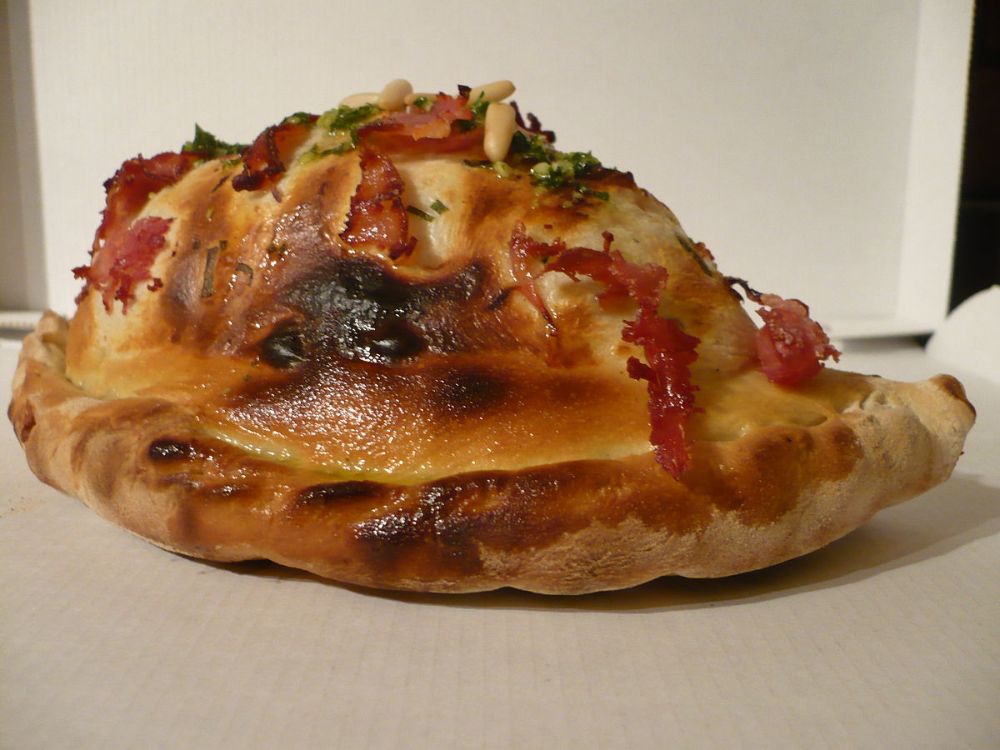

CALZONE

Loaded with sausage, pepperoni, mozzarella, ricotta,
Parmesan cheese and vegetables wrapped in soft and fluffy
calzone dough. These cheesy Calzones make perfect
weeknight dinner.
The calzone is a specialty of Italian cuisine made in a similar way to pizza but completely closed by
a dough; it can be stuffed with cheese, meat, vegetables or other condiments, and is cooked in the oven.
Ingredients:
Calzone Dough:
- 1 package active dry yeast
- 1 cup water, lukewarm
- 1 tsp white sugar
- 1 tsp salt
- 2 1/2 cups all-purpose flour, plus extra for dusting
- 1 tablespoon olive oil
Filling Ingredients:
- ½ cup diced sausage
- 1/2 cup diced pepperoni
- 1/2 cup ricotta cheese
- 1 cup shredded Mozzarella cheese
- ½ cup Parmesan
- 1/2 cup spinach
- ½ cup sliced tomatoes
- 1 tbsp basil leaves
- egg wash, 1 egg + 1 tbsp water
marinara sauce, for dipping
Steps:
- To make the calzone dough, in a large bowl, combine yeast and sugar in lukewarm water. Wait a few
seconds until the yeast dissolves. Then add salt and gradually stir in flour, mix with your hands until
dough is smooth. Then transfer the dough to a large cutting board sprinkled with flour. Knead the
dough for about 5 minutes or until elastic. Place the dough in a large bowl coated with oil, cover with
plastic wrap and let rise for 45 minutes or until the size doubles.
- Preheat oven to 425°F and set aside a cooking sheet lined with parchment paper while you prepare
the filling.
- In a large skillet, cook sausage pieces over medium-high heat. Crumble the sausage as you stir and
cook until no longer pink. Add pepperoni and vegetables. When cooked, remove from the skillet and
allow to cool. Add cheese and mix.
- When the dough has risen, roll it out the dough into a large rectangular shape on a lightly floured
surface. Divide into 4 pieces. Spoon the meat, cheese and vegetable mixture on one side of each
rectangle. Fold the dough and pinch edges to seal completely. Place them on the baking sheet and
brush the surface of each calzone with egg wash. Bake for 10-12 minutes until golden brown.
- Serve warm with Marinara Sauce.
Go back